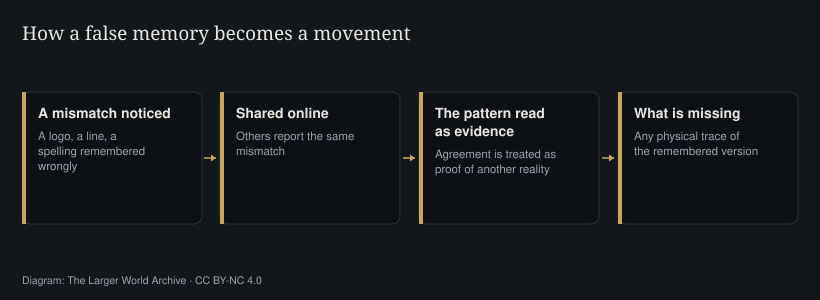

The name
The phenomenon is named after a mistake. Fiona Broome, a paranormal researcher, discovered that she and others shared a clear memory of Nelson Mandela dying in prison in the 1980s — a memory of an event that did not happen. Mandela was released in 1990, became president in 1994, and died in 2013.
Maps, diagrams and images

She gave the pattern a name, and the name stuck: collective false memories of events that did not occur, or of details that were never there.
The standard examples
They are almost all cultural rather than political, which is itself a clue:
- “Luke, I am your father.” The line in The Empire Strikes Back is “No, I am your father.”
- The Monopoly man's monocle. He does not wear one.
- The Berenstain Bears. Readers remember “Berenstein” — a spelling that would fit a common surname pattern better than the actual one.
- Location errors. A film line, a logo, the position of a country on a map, the colour of a character's clothing.
Britannica's entry lists these and notes the pattern: the errors are near-misses, not random. They are what memory produces when it reconstructs a familiar thing from a schema instead of retrieving it exactly.
What psychologists say is happening
- False memory. Memory is reconstructive, not a recording. Recalling an event rebuilds it, and rebuilding can introduce errors that feel as vivid as the original.
- Confabulation. When a detail is missing, the mind fills it in smoothly and does not flag the fill.
- Source confusion. You remember reading the joke, or seeing a parody, and later file it as the original — a documented effect that social media accelerates enormously.
- Schema theory. The Monopoly man “should” have a monocle, because a 1930s capitalist caricature does. The schema overwrites the image.
- Suggestibility. Once a claim circulates (“it was Berenstein”), people check their memory against the claim rather than the object, and confidence rises.
The popular explanation — that we have slipped between parallel timelines, or that history was edited — has a structural problem: it predicts nothing. There is no experiment that could show the timeline changed, because the only evidence offered is the memory that is already in question.
Compare it with how a testable claim behaves. If a logo changed, the printing plates, the trademark filings, the original film negatives and millions of physical objects would all have to change together — and they are held in archives, patent offices and museum stores that do not share a memory. This is exactly the test the Tartaria dossier applies to buildings, and the proven conspiracies dossier applies to documents.
The serious version of the question
Strip out the timelines and something important remains: human memory is far less reliable than courts, schools and eyewitnesses assume. That is a live and consequential research field — mistaken identification in criminal cases, the fragility of childhood recollection, and the ease with which a confident witness can be wrong.
The Mandela Effect is the internet's folk demonstration of that finding. The joke is that people reach for parallel universes; the finding is that a shared, confident, detailed memory can be simply false — and that this is normal.
The archive's use for it
Because it explains a mechanism that runs through every other dossier: cryptid sightings, mystery reports, and creepypasta all depend on witnesses who are sincere and wrong. Understanding that is not cynicism about people. It is the beginning of good evidence.
Sources for this page
- Britannica, “Mandela effect” — naming, examples, psychological explanationsbritannica.com
- Britannica, “Why is it called the Mandela effect?”britannica.com
- Wikipedia, “False memory” — how confident, shared errors formwikipedia.org
- Wikipedia, “Confabulation” — the reconstructive mechanismwikipedia.org
Open resources on this topic
- BookCERN Caused The Mandela Effect Pt. 1 — Heidecker · 2024 (Internet Archive, free to read)
- BookShattered Reality: The Mandela Effect — Rob Shelsky · 2018 (Internet Archive, free to read)
- BookCERN Caused The Mandela Effect Pt. 1 — Heidecker · 2024 (Internet Archive, free to read)
- PapersOpen-access articles: DOAJ · PubMed Central · Internet Archive Scholar
- BooksPublic-domain and borrowable copies: Open Library · Project Gutenberg · Google Books
More images
Cite this page
Momin, S. (2026). The Mandela Effect. The Larger World Archive. https://drsamonline.github.io/LARGE_GLOBE/mandela-effect.htmlMomin, Sohil. “The Mandela Effect.” The Larger World Archive, 2026, https://drsamonline.github.io/LARGE_GLOBE/mandela-effect.html.Momin, Sohil. “The Mandela Effect.” The Larger World Archive, 2026. https://drsamonline.github.io/LARGE_GLOBE/mandela-effect.html.@misc{the2026mandela,
author = {Momin, Sohil},
title = {The Mandela Effect},
year = {2026},
howpublished = {The Larger World Archive},
url = {https://drsamonline.github.io/LARGE_GLOBE/mandela-effect.html},
note = {Last reviewed 20 November 2026}
}Last reviewed 20 November 2026 · Corrections policy · this page is not peer reviewed